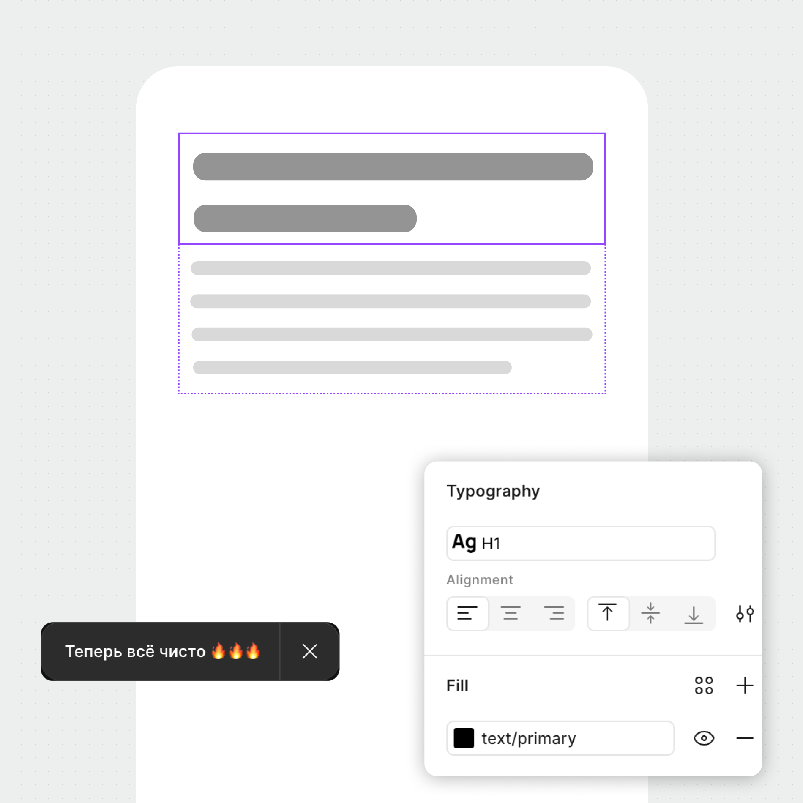

✱ Для UX‑редакторов
Плагин для чистой типографики
Чистовик — плагин, который убирает висячие предлоги, ставит правильные тире, исправляет кавычки и другие мелочи

Меньше рутины
Финальный штрих перед разработкой
Плагин бережно наведёт порядок в тексте, ориентируясь на традиции русской типографики. Что именно он меняет и как, можно проверить в любой момент: Чистовик → Продвинутые фичи → Правила.
Было
Включите песню группы
"Король и Шут" на
полную громкость - соседи оценят!!
Стало
Включите песню группы
«Король и Шут»
на⍽полную громкость — соседи оценят!
Проверка там, где нужно
Один слой, фрейм или вся страница
Не обязательно запускать плагин для каждого элемента отдельно. Можно даже ничего не выбирать — тогда будут оттипографированы все тексты на странице.


Без лишней тревоги
Не ломает макеты
Плагин работает только внутри существующего слоя и учитывает дизайн‑систему — так что у вашего дизайнера не будет причин ругаться

-
01
Сохраняет связи с библиотекой
Все компоненты, переменные, цветовые и текстовые стили будут на месте
-
02
Следит за форматированием
Жирность и подчёркивание текста не потеряется после обработки
-
03
Не лезет в формулировки
С ним вы не увидите СМС вместо смс и другие внезапные правки
Под разные этапы работы
Неразрывный пробел можно ставить по‑разному
Режим выбирается в зависимости от ваших задач и договорённостей в команде
До 20 сентябряНастоящий неразрывный пробел
До*20*сентябряМесто пробела видно сразу
Легко исправить
Не заставляет искать ошибку
Если что‑то идёт не так, Чистовик не останавливается и исправляет всё, что может. Проблемные слои собираются в отдельном окне — по клику Figma сразу находит и выделяет нужный.

Коротко о важном
Возможно, вы хотели спросить
«Чистовик» переписывает формулировки?
Нет. Он не оценивает стиль и смысл текста, а исправляет только однозначные типографические ошибки.
Стили внутри слоя сохранятся?
Да. Плагин работает внутри существующего текстового слоя и сохраняет его оформление.
Можно проверить сразу всю страницу?
Да. Выберите страницу перед запуском — или ограничьте обработку одним фреймом или слоем.
Где посмотреть полный список правил?
Он встроен в плагин: правила можно открыть и найти через поиск в любой момент.